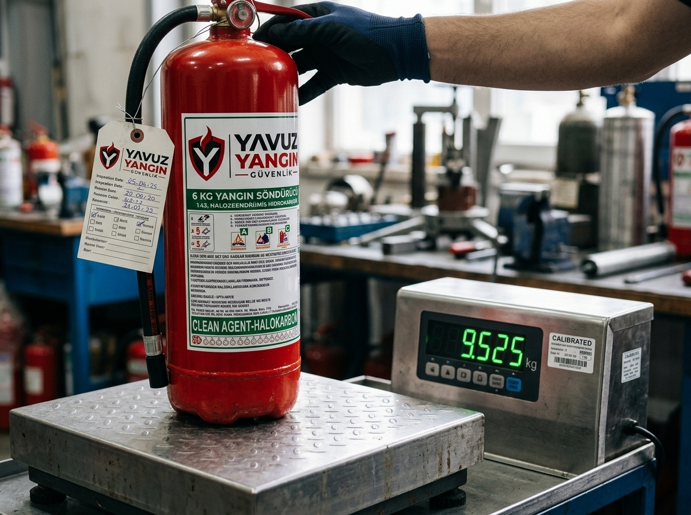

Fiyat & Maliyet

2026 Yangın Tüpü ve Dolum Fiyatları Ne Kadar? (Maliyet ve Standart Rehberi)
2026 yılı 6 kg KKT, CO2 ve köpüklü yangın tüpü satış ve dolum fiyatları. Merdiven altı ucuz dolum tuzakları ve B2B satın alma tasarruf yöntemleri.